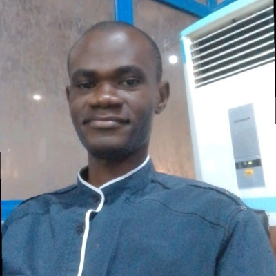

I'm Mesogboriwon Adeolu — a Chemical Engineer who spent years reducing downtime and tuning automation systems, now applying the same process-optimization instinct to data, ML, and analytics. This is the field log of that transition.
Random Forest classifier on 7,043 telecom customer records, ~79% accuracy.
View repo →SMOTE-balanced classification across ~284K transactions, ~86% recall.
View repo →Classification model on ~100K patient records, ~89% accuracy.
View repo →Python for data prep, Power BI for the interactive reporting layer.
View repo →Salary and skill-demand trends across roughly 9,355 job postings.
View repo →Full-stack build: React, Node.js, Express, MongoDB, Stripe checkout.
View repo →
I hold a B.Eng. in Chemical Engineering from FUPRE and built my early career in industrial automation and production supervision — including NYSC service and later a Production Supervisor role at Industrial Projects International Nig Ltd, plus internship experience at NPDC (OML 111).
That work taught me to think in systems: inputs, bottlenecks, feedback loops, and measurable output. I'm now applying that lens to data — building SQL portfolios, machine learning models, and full-stack tools, while completing NITDA's 3MTT Data Science & AI programme.
I'm currently based between Lagos and Abeokuta, actively applying for roles that sit at the intersection of engineering rigor and data-driven decision-making — from automation and process optimization roles to AI annotation, analytics, and data science positions.